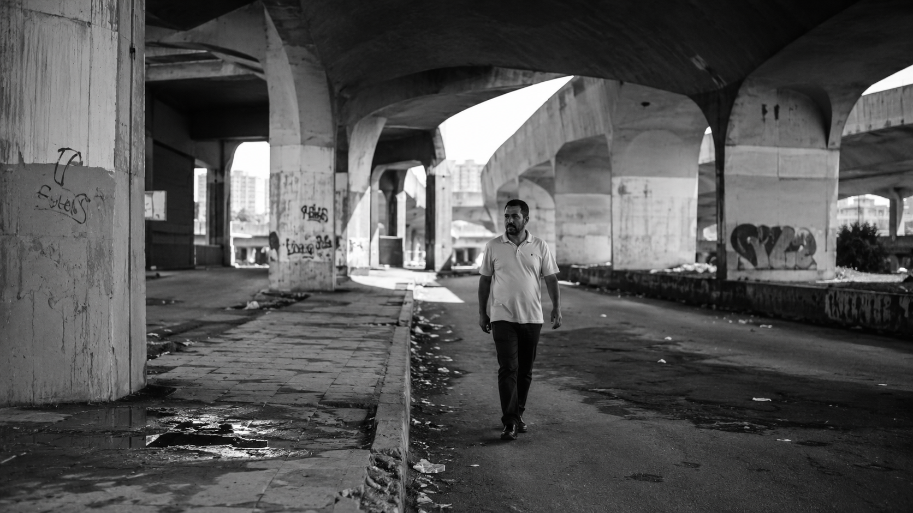
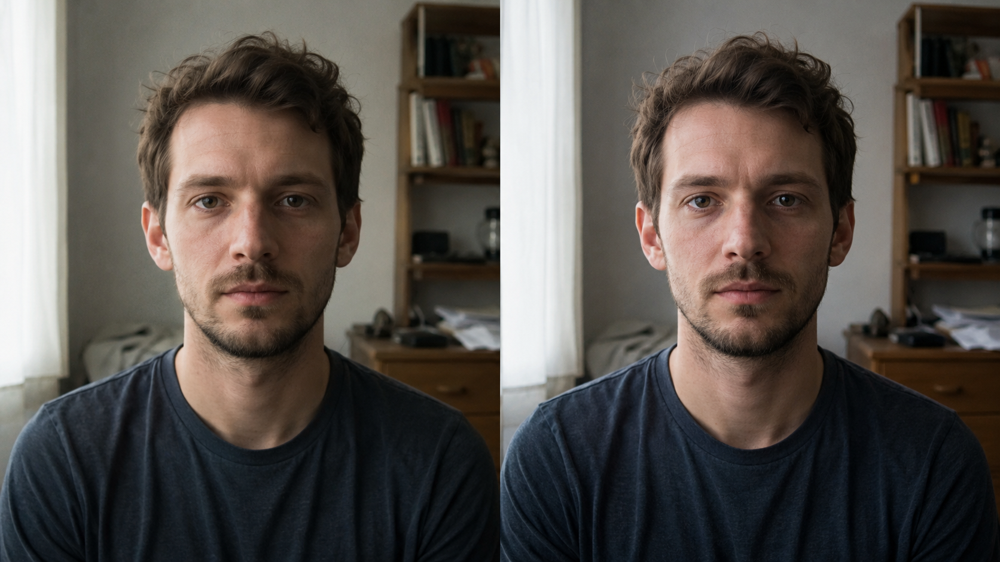
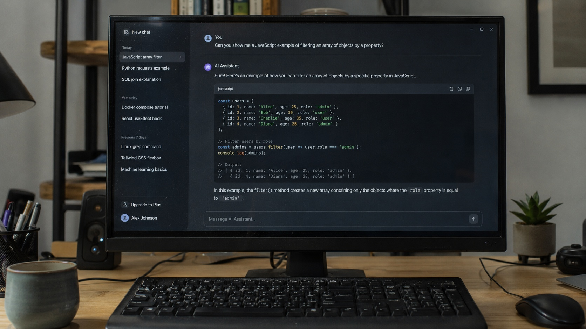
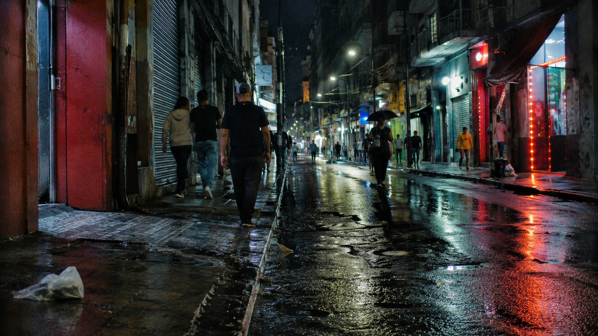
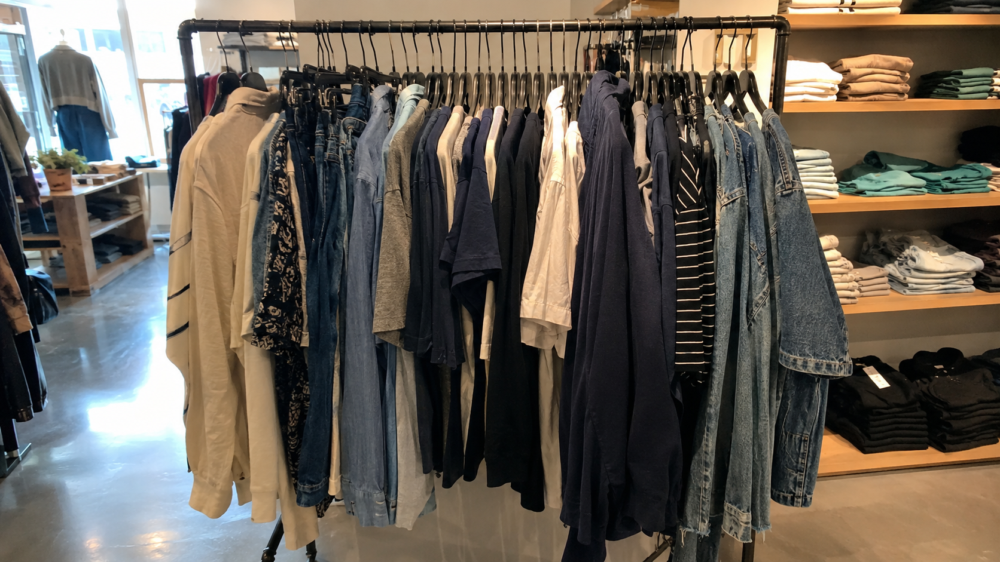

TREND: RECREATING HIGH-CONTRAST BLACK AND WHITE STREET PHOTOGRAPHY IN AI
Camera-Grade Black and White Street Photography: Forensic Realism Under an Urban Bridge
CALIBRATION DATE: 2026-07-01
EXAMINE DOSSIER →
TREND: LEICA M10 CALIBRATION SETTINGS FOR MIDJOURNEY AND CHATGPT
Camera-Grade Portrait Realism: Forensic Calibration of Micro-Contrast, Organic Sharpness, and Natural Color
CALIBRATION DATE: 2026-07-01
EXAMINE DOSSIER →
TREND: THE MICRO-CONTRAST CALIBRATION GUIDE FOR DIGITAL CREATORS
Forensic Realism Calibration for Weathered Stone Walls: Building Camera-Grade Texture Through Physical Language
CALIBRATION DATE: 2026-06-30
EXAMINE DOSSIER →
TREND: MIDJOURNEY V6 VS DALL-E 3: WHICH MODEL HANDLES THE 5 LAYERS BEST
Forensic Lens Calibration: Building Camera-Grade Split-Screen Portrait Comparisons Through Physical Realism
CALIBRATION DATE: 2026-06-30
EXAMINE DOSSIER →
TREND: HOW TO GET THE ALPHA REALISM GUIDE TO SCALE YOUR CONTENT PIPELINE
Camera-Grade Realism for Digital Guidebook Scenes: A Forensic Calibration Workflow
CALIBRATION DATE: 2026-06-29
EXAMINE DOSSIER →
TREND: CUSTOM GPT CRUEL RAW REALISM: HOW TO DOUBLE YOUR GENERATION SPEED
Forensic Realism for AI Images: Building a Believable Computer Screen Chat Interface
CALIBRATION DATE: 2026-06-29
EXAMINE DOSSIER →
TREND: RECREATING KODAK PORTRA 400 AESTHETIC: PROMPT RECIPE AND SETTINGS
Camera-Grade Portrait Realism: Forensic Calibration Through Five Layers of Reality
CALIBRATION DATE: 2026-06-28
EXAMINE DOSSIER →
TREND: LENS CALIBRATION SETTINGS FOR MACRO FOOD PHOTOGRAPHY PROMPTS
Camera-Grade Raspberry Macro Photography: A Five-Layer Reality Calibration for Authentic Surface Detail
CALIBRATION DATE: 2026-06-28
EXAMINE DOSSIER →
TREND: RECREATING AVAILABLE LIGHT IN NIGHT STREET PHOTOGRAPHY PROMPTS
Camera-Grade Night Street Realism: Forensic Calibration of Neon Reflections, Wet Asphalt, and Authentic Urban Shadows
CALIBRATION DATE: 2026-06-27
EXAMINE DOSSIER →
TREND: ALPHA REALISM GUIDE: COMPLETE PROMPT TEMPLATES FOR CREATORS
Camera-Grade Realism: How to Photograph a Photographer Holding a Printed Guidebook Beside a Camera Bag
CALIBRATION DATE: 2026-06-27
EXAMINE DOSSIER →
TREND: THE GENERIC CATALOG LOOK OF DEFAULT AI MODELS
Forensic Retail Realism: Building Authentic Clothing Rack Catalog Photography Without CGI Artifacts
CALIBRATION DATE: 2026-06-26
EXAMINE DOSSIER →
TREND: WHY DOES ALL AI ART LOOK EXACTLY THE SAME?
Forensic Realism Calibration: Examining Synthetic Face Grids Through Documentary Observation
CALIBRATION DATE: 2026-06-26
EXAMINE DOSSIER →
TREND: WARM MINIMALIST BEDROOM
The Warm Glow: Master Ambient Light in AI Bedroom Renders
CALIBRATION DATE: 2026-06-18
EXAMINE DOSSIER →